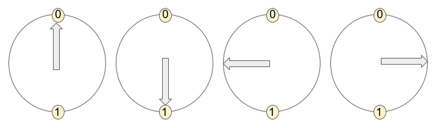
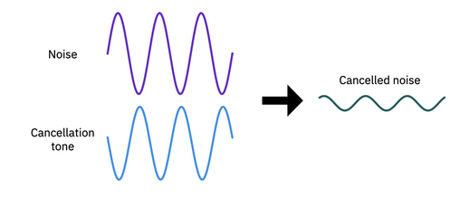
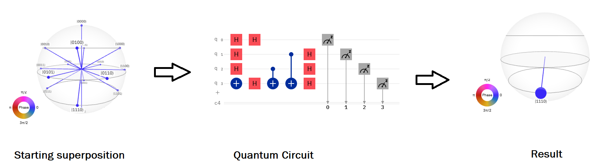

Superposition Again¶
By now you’re getting pretty familiar with the idea of qubits, and of quantum states. Remember that we’ve been considering four states a qubit can be in, up, down, left and right:

We’ve also learned a lot about how these states work - how we can measure qubits, entangle them, and apply gates to them. We also talked a little bit about the idea of superposition. Remember that superposition is when one state is made out of other ones. Let’s look at these states, and their notation, again:
\(\uparrow\;=|0\rangle\)
\(\downarrow\;= |1 \rangle\)
\(\leftarrow\; = |0 \rangle + |1 \rangle\)
\(\rightarrow\; = |0 \rangle - |1 \rangle\)
Remember that we can also express \(\uparrow\) and \(\downarrow\) in terms of \(\leftarrow\) and \(\rightarrow\) as well:
\(\uparrow\) = \(\leftarrow\) + \(\rightarrow\)
\(\downarrow\) = \(\leftarrow\) - \(\rightarrow\)
Today, we’re going to understand how quantum computers use superposition to do certain things faster than any other computer can do it!
Quantum Gates and Superpositions¶
Remember that quantum gates do things to quantum states.
For example, an X gate turns an up state into a down state,
X (\(\uparrow\)) = \(\downarrow\)
In the circuit simulator, you might have noticed that the X gate doesn’t change a right state,
X (\(\rightarrow\)) = \(\rightarrow\)
When it hits a left state, it does something interesting:
X (\(\leftarrow\)) = - \(\leftarrow\)
Notice that there’s a minus sign in front now! Often the minus sign isn’t important, so we haven’t been keeping track of it so far. When it comes to superposition and gates though, the minus sign matters. We’ll explore this in the next section.
Remember that you can check what each gate does to any state by playing with the one qubit circuit Scratch project. Since you are more advanced quantum engineer now, we’ve given you access to a modified project. that lets you see what superposition of states you’re in.
Challenge 1¶
What does the Z gate do to the up state?
Nothing!
Turns it into “-up”
Turns it into the left state
Turns it into the down state
Nothing!
What does the Z gate do to the “down” state?
Nothing!
Turns it into the “-down” state
Turns it into the left state
Turns it into the right state
Turns it into the “-down” state
What does the H gate do to the down state?
Nothing!
Turns it into the left state
Turns it into the up state
Turns it into the left state
Distributive Gates¶
Do you remember how multiplying numbers works when there are brackets? For example, what’s the answer to
3 x (2 + 1) = ?
9, right? But there are actually two ways to do this. One way is you could add first,
3 x (2+1) = 3 x 3 = 9
But the other way is to multiply first! If you multiply first though you have to be careful,
3 x (2 + 1) = (3 x 2) + (3 x 1) = 6 + 3 = 9
The “3” multiplies into each number that we are adding together. Staff Debug Info
The rule for gates and superposition is that the gate goes into each part of the superposition, just like when we multiply numbers we have to multiply each number thats being added together.
Let’s see this in action:
X( \(\uparrow\) + \(\downarrow\) ) = X( \(\uparrow\) ) + X( \(\downarrow\) )
If we’d like we can keep going, and write out what X( \(\uparrow\) ) and X( \(\downarrow\) ) gives:
X( \(\uparrow\) ) + X( \(\downarrow\) ) = \(\downarrow\) + \(\uparrow\)
Remember that \(\rightarrow\) = \(\uparrow\) + \(\downarrow\), so this also says that X ( \(\rightarrow\) ) = \(\rightarrow\)
You can also watch this be explained in the video.
Quantum Advantage¶
So how does superposition benefit a quantum computer?
To look at this in a qualitative way let’s look at sound waves and noise cancellation. The way your noise cancelling headphone work is by using the principle of superposition in a classical way. Let’s say you have an incoming sound wave that has the a noise signal on top of it. Interference is used reduce the amplitude of unwanted noise: your headphone will generate a tone of approximately the same frequency and amplitude, but out of phase by a value of \(\pi\) or 180 degrees:

As you can see above, the superposition of the noise signal with the generated signal will result in interference, which reduce the amplitude of the incoming noise signal. The noise signal does not dissapear entirely because the amplitude and phase of the generated signal is not a perfect match: but it does the job well enough.
A quantum computer works much the same way. At the start of most algorithms, all the qubits are put into superpositions using H gates. These superpositions will representa all possible computation states. These states are them fed into a quantum circuit that selectively interferes the components of the superposition according the algorithm’s design. The magic of the algorithm is that it will interact all the superposition states so that What remains after cancelling the amplitudes and phases of the input state is the solution to the computation!

Entangled states are also very useful in quantum computing. Entangled states, as we have seen, have the unique property where the combined state of the qubits contains more information than the qubits do individually. Many qubits can be entangled, and these states can be used for quantum teleportation (which we’ve explored), where an entangled state is used to transfer information from one qubit to another regardless of physical distance.